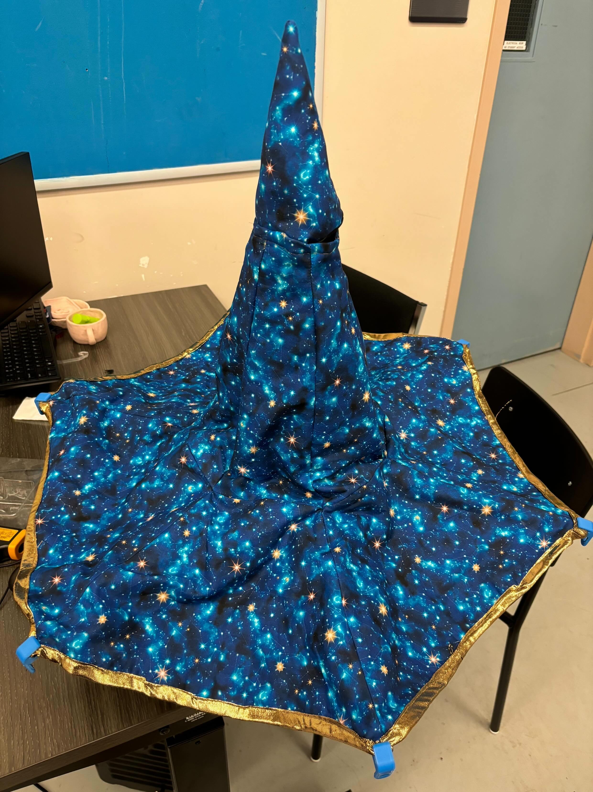
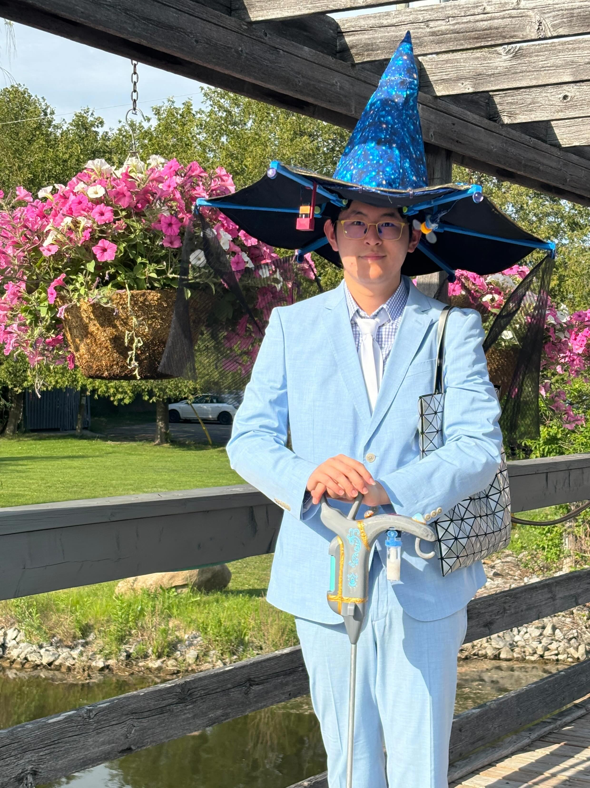

Wizard Hat
A two-layer wizard hat sewn from a friend's pattern — start to hem, as a collaboration.

Overview
Custom hat for an underlying rigid frame adapting to dynamic fabric selection. I took a rough pattern and tailored its form to follow the function of the underlying structure working in a team to realise a fully sewn, hemmed garment.
STAR Write-Up
- Situation
- A friend wanted a custom wizard hat for a costume and already had fabric and a pattern picked out, but needed help turning that pattern into an actual finished hat.
- Task
- Take his pattern, tailor it to fit the hat's cone shape correctly, and sew it up to a point where he could add his own finishing details — without taking the project over entirely.
- Action
- Reviewed his pattern with him and adjusted the cut to match the hat shape, then pinned and sewed two layers of fabric together — an outer layer and a lining — before hemming the brim and seams.
- Result
- A correctly tailored, two-layer wizard hat handed back for him to finish — built as a genuine back-and-forth with the original pattern-maker rather than a solo project.

Collaboration & the Two-Layer Challenge
This piece was a group project, not a solo endeavour: the pattern, the fabric, finishing touches, and the final say on fit all resided out of my hands. The job was to adapt the working pattern accurately, make the tailoring calls needed to get it onto the actual hat shape, and stop at the right point so he could finish it himself, which meant communicating along the way instead of just disappearing with the fabric.
The trickiest technical part was sewing two layers of fabric- an outer shell and a lining at the same time. Two layers shift against each other under the machine more than one does, so keeping the seam allowance even on both layers and avoiding bunching meant pinning more carefully and sewing slower than a single-layer project would.
Tech Stack
- Sewing Machine
- Fabric Shears
- Pins